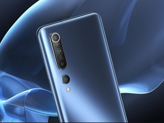
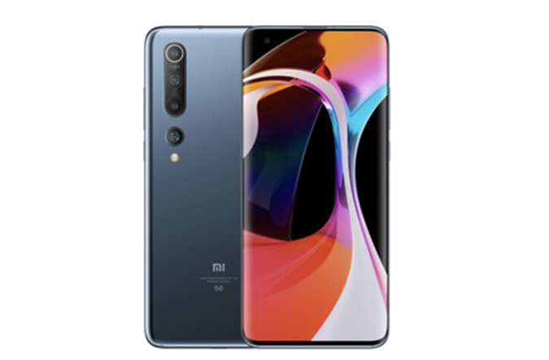

Es oficial, después de rumorearse y anunciarse a cuentagotas algunas de sus características, Xiaomi ha presentado los nuevos Xiaomi Mi 10 y Xiaomi Mi 10 Pro. Por ahora la gama alta de Xiaomi para este año y (al menos sobre el papel) uno de los smartphones que apuntan a móvil del año. En un evento online para el mercado de China, Xiaomi ha presentado los dos nuevos smartphones de su catálogo de forma oficial. En principio iba a haber una segunda presentación el próximo 23 de febrero, dentro de 10 días, tal y como anunciaron, pero debido a la cancelación del MWC la empresa ha decidido retrasar el anuncio. Mientras tanto, ya podemos ver sus características y especificaciones principales, así como imágenes oficiales del teléfono.
El Xiaomi Mi 10 es en cierto modo el sucesor del Xiaomi Mi 9, que también llegó por estas fechas durante 2019 y pudimos analizar en detalle. Aunque del que más hereda características es del Xiaomi Mi Note 10, como por ejemplo su cámara de 108 MP. Sea como sea, es sin duda el nuevo buque insignia de Xiaomi.
Ficha técnica del Xiaomi Mi 10
| XIAOMI MI 10 | XIAOMI MI 10 PRO | |
| DIMENSIONES Y PESO | 162,6 x 74,8 x 8,96 mm, 208 gramos | 162,6 x 74,8 x 8,96 mm, 208 gramos |
| PANTALLA | 6,67" AMOLED FHD+ (2.340 x 1.080), HDR10+, aspecto 19,5:9, refresco de 90Hz, brillo de 800 nits y máximo de 1.120 nits | 6,67" AMOLED FHD+ (2.340 x 1.080), HDR10+, aspecto 19,5:9, refresco de 90Hz, brillo de 800 nits y máximo de 1.120 nits |
| PROCESADOR | Qualcomm Snapdragon 865 | Qualcomm Snapdragon 865 |
| RAM | 8 / 12 GB | 8 / 12 GB |
| ALMACENAMIENTO | 128 / 256 GB UFS 3.0 | 256 / 512 GB UFS 3.0 |
| SISTEMA OPERATIVO | Android 10 + MIUI 11 | Android 10 + MIUI 11 |
| XIAOMI MI 10 | XIAOMI MI 10 PRO | |
| CÁMARAS TRASERAS | 108 MP principal f/1.6 + 2 MP bokeh f/2.4 + 13 MP gran angular f/2.4 + 2 MP macro f/2.4 | 108 MP principal f/1.6 + 12 MP bokeh f/2.0 + 20 MP gran angular f/2.2 + telefoto de 10 aumentos f/2.4 |
| CÁMARAS FRONTALES | 20 MP con grabación a 120fps | 20 MP con grabación a 120fps |
| BATERIA | 4.780 mAh con carga rápida por cable a 30W, rápida inalámbrica a 30W e inversa a 10W | 4.500 mAh con carga rápida por cable a 50W, rápida inalámbrica a 30W e inversa a 10W |
| SENSORES | Acelerómetro, barómetro, giroscopio, brújula, proximidad, RGB | Acelerómetro, barómetro, giroscopio, brújula, proximidad, RGB |
| XIAOMI MI 10 | XIAOMI MI 10 PRO | |
| SEGURIDAD | Lector de huellas en pantalla + Reconocimiento facial | Lector de huellas en pantalla + Reconocimiento facial |
| SONIDO | Altavoces estéreo con sonido Hi-Res | Altavoces estéreo con sonido Hi-Res |
| CONECTIVIDAD | Conexión 4G, 4G+, 5G, Wi-Fi 6, Bluetooth 5.1, NFC, GPS, GNSS, Galileo, GLONASS | Conexión 4G, 4G+, 5G, Wi-Fi 6, Bluetooth 5.1, NFC, GPS, GNSS, Galileo, GLONASS |
| PRECIO | Desde 799 euros | 999 euros |
Procesador de gama alta y especificaciones a la altura
Como ya se había confirmado, los nuevos Xiaomi traen el procesador Snapdragon 865 de Qualcomm. Este procesador también implica que el teléfono tenga compatibilidad con la conectividad 5G. En cuanto a la gráfica, encontramos una Adreno 650 en el interior de ambas versiones. Si nos vamos a la memoria vemos una RAM LPDDR5 que varía desde los 8 GB hasta los 12 GB, dependiendo del modelo escogido. El almacenamiento empieza en 128 GB internos y hay una versión de hasta 512 GB, los Xiaomi Mi 10 y Mi 10 Pro traen el estándar UFS 3.0 en su almacenamiento interno.
Estas especificaciones son en principio suficientes para mover la pantalla AMOLED con resolución FHD+, es decir, 2.340 x 1.080 píxeles. Se trata de un panel de relación de aspecto 19,5:9 con una tasa de refresco de 90Hz y refresco de toque a 180Hz. El brillo máximo que puede alcanzar es de 1.120 nits, aunque no es continuo. Por otra parte trae soporte para HDR10+ y un ratio de contraste de 5.000.000:1 según el fabricante.
Finalmente tenemos la batería y la carga de la misma. El Xiaomi Mi 10 tiene algo más de capacidad que el Xiaomi Mi 10 Pro. Nos encontramos ante 4.780 mAh frente a 4.500 mAh. Por qué el Pro tiene menos es algo que no se sabe a ciencia cierta. Lo que sí que sabemos es la capacidad de carga de cada uno, el modelo normal acepta carga rápida por cable e inalámbrica a 30 W, así como carga inversa a 10W para accesorios. El modelo Pro acepta carga rápida por cable a 50W y a 30W si es inalámbrica, también tiene carga inversa a 10W. Actualmente posiblemente sea el móvil con mayor carga rápida del mercado.
Cuatro cámaras traseras con el sensor 108 MP por bandera
Siguiendo la estela de sus predecesores, el nuevo Xiaomi Mi 10 incorpora el sensor de 108megapíxeles del fabricante chino. Un sensor que hemos visto en el Xiaomi Mi Note 10 por ejemplo, aunque supo a menos de lo que esperábamos. El sensor de 108 MP es de 1/1,33 pulgadas (pixel de 1,6 μm) con lente 7P y apertura f/1,69. Tecnología pixel-binning 4 en 1 y estabilización óptica de imagen de 4 ejes. En todo caso, es el nuevo sensor estrella de la marca y es probable que lo sigamos viendo en más modelos durante un tiempo.
Acompañando a la cámara principal con el sensor de 108 MP encontramos tres cámaras más. Son diferentes en cada modelo. en el Xiaomi Mi 10 tenemos un bokeh de 2 MP, un gran angular de 13 MP y una lente de 2 MP para macro. En los tres casos la apertura que encontramos es f/2.4 En el Xiaomi Mi Pro encontramos un gran angular de 20 MP (f/2.0), un telefoto de diez aumentos (f/2.0) y un bokeh de 12 MP (f/2.2). A los diferentes modos que se pueden conseguir con estas lentes (zoom óptico, modo retrato, gran angular...) habrá que ver cómo se comporta también el software a la hora de generar fotografías en modo noche, recortar en modo retrato y más opciones de optimización. Xiaomi ha anunciado que el teléfono permite grabar en 8K, falta por ver cómo se porta eso con el almacenamiento disponible. También dispone de estabilización óptica y digital para los vídeos.
En el apartado de la cámara frontal encontramos una sola de 20 MP en el sensor. No hay muesca alguna ni tampoco un diseño modular/mecánico, la pantalla está perforada para dejar un hueco para la cámara. De entre las distintas opciones para incorporar la cámara frontal en los smartphones actuales, en los últimos modelos parece ser que la perforación está ganando puntos. En este caso dicha perforación se encuentra en la esquina superior izquierda.
Precio y disponibilidad de Xiaomi Mi 10 y Mi 10 Pro
El Xiaomi Mi 10 y el Xiaomi Mi 10 Pro llegan en tres colores distintos como hemos podido ver: rosa, azul y gris. El color no afecta al precio final, pero sí la configuración de RAM y almacenamiento que escojamos. Los precios son los siguientes:
- Xiaomi Mi 10 5G (8/128 GB): 799 euros.
- Xiaomi Mi 10 5G (8/256 GB): 899 euros.
- Xiaomi Mi 10 Pro 5G (8/256 GB): 999 euros.